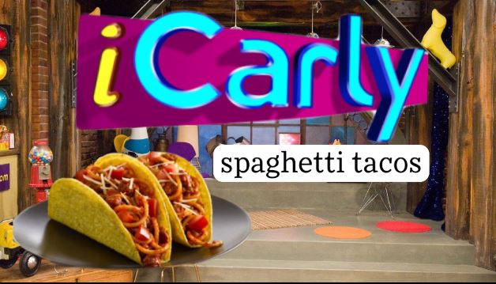

Spaghetti Tacos

Spaghetti tacos are a ridiculous sounding but surprisingly tasty meal that originates from the hit Nick TV show iCarly. They are fairly simply, but you can have a whole meal with very little ingredients!
Ingredients
- 1 lb ground beef or ground turkey
- (1 1/4 ounce) packet taco seasoning
- 1 cup of water
- 1 (26 ounce) jar spaghetti sauce
- 1 (8 ounce) box spaghetti noodles
- 12 hard taco shells
- Optional: Salsa, shredded cheese, lettuce, etc.
Steps
- Prepare noodles according to package directions. Drain and return to pot.
- Brown meat in pan until no longer pink. Add taco seasoning and water. Bring to a boil. Reduce heat and simmer for 5-6 minutes, until sauce thickens.
- Add spaghetti sauce and cook until warmed. Add to noodles and mix thoroughly.
- To assemble the tacos, place your extra choice ingredients first. Finally, finish filling the shell with spaghetti.
- Enjoy!